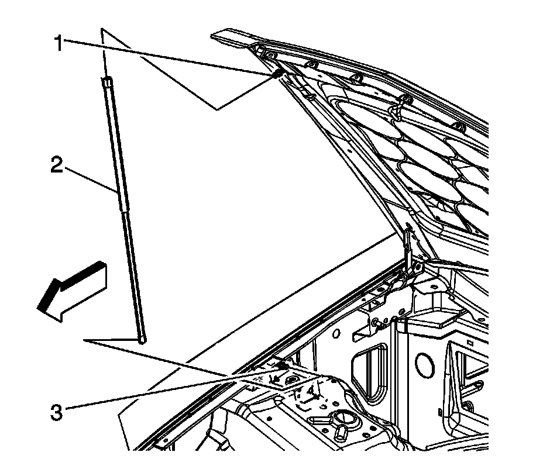
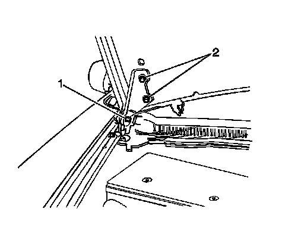

Hood: Service and Repair
Hood Replacement
The primary hood latch striker is not serviceable separately from the hood. If the hood striker is damaged, the hood must be replaced. The hood striker bolts must be reused, or if damaged replaced with new hood striker bolts. If the hood and/or striker needs to be replaced, refer to Hood Primary Latch Striker Replacement (Service and Repair) .
Removal Procedure
1. Open the hood.
2. Using a grease pencil, mark the location of the hinge on the hood assembly.
3. Apply tape to corners of panel and adjacent surfaces to help prevent paint damage.
4. Disconnect the windshield washer hose connection. Refer to Windshield Washer Hose Replacement (Service and Repair) .

5. Remove the hood assist rods (2). Refer to Hood Open Assist Rod Replacement (Service and Repair) .

6. With the aid of an assistant, remove the bolts (2) securing the hood to the hood hinge.
7. With the aid of an assistant, remove the hood from the vehicle.
Installation Procedure
1. With the aid of an assistant, position the hood to the vehicle.
2. Position the hinge to the grease pencil marks on the hood.
Notice: Refer to Fastener Notice (Fastener Notice) .
3. With the aid of an assistant, install the bolts (2) in order to secure the hood to the hood hinge.
Tighten the bolts (2) to 9 N.m (80 lb in).
4. Install the hood assist rods (2). Refer to Hood Open Assist Rod Replacement (Service and Repair) .
5. Connect the windshield washer hose connection. Refer to Windshield Washer Hose Replacement (Service and Repair) .
6. Slowly close the hood checking for adjustment, adjust if necessary. Refer to Hood Adjustment (Adjustments) .
7. Remove the tape from the hood and the fenders.
8. Close the hood.